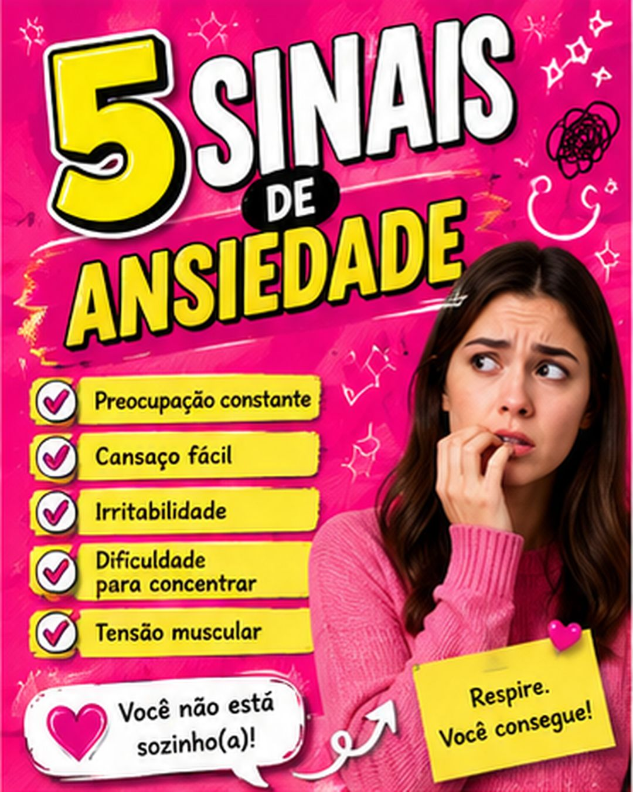
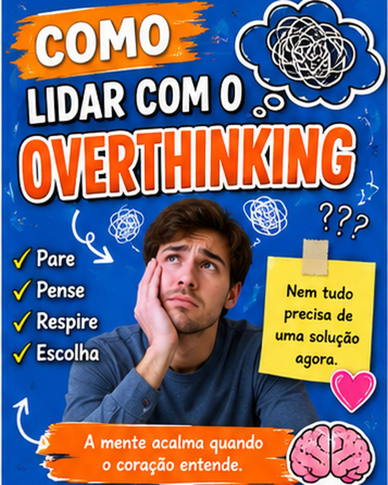
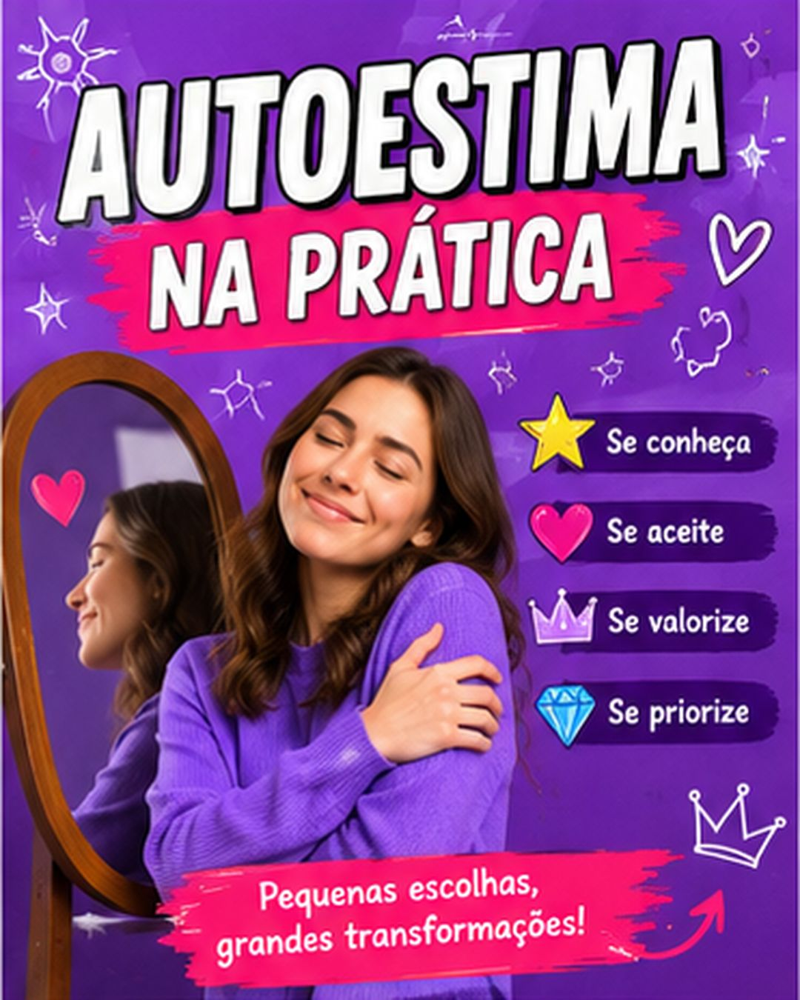

quero melhorar o Instagram do consultório
Me conta quem você atende 👇
O conteúdo certo encurta essa espera. A fluxxo assume o Instagram do seu consultório: estratégia, artes, roteiros e stories, sempre dentro do que o CFP permite. Você só dá o ok.
Antes de mandar a mensagem, ela abre seu Instagram e decide ali se você é uma pessoa segura pra procurar. De um lado, o perfil se virando com o que dá. Do outro, o mesmo perfil depois de um mês com a fluxxo.



Post solto não enche agenda. Aqui o mês inteiro é pensado junto: carrossel, estático, story e Reels puxando um o outro até virar aquela primeira mensagem no direct. Você recebe tudo junto e aprova de uma vez só.
Oi! Fechei o calendário de outubro 📅
09:12Carrossel, estático, Reels e story do mês inteiro. Arte pronta, legenda escrita, roteiro na mão. Dá uma olhada?
09:12Nossa, tudo isso já? Vou ver agora!
09:38Esse é o de terça. O roteiro do Reels da semana também já está lá dentro.
09:39Amei! Pode publicar tudo 👏
10:02Fechado. Mês inteiro programado ✅ Agora é só você atender.
10:03Assim chega o cronograma
O caminho que a gente refaz todo mês pra transformar quem só passava o dedo em alguém que finalmente manda a mensagem.
Carrosséis que a gente entregou pra psicólogos de verdade. Passa o dedo e olha slide por slide: é esse nível de cuidado que entra no seu mês.

Quase nada. O cronograma chega pronto, você lê e aprova. Se tiver Reels no mês, é só gravar no celular seguindo o roteiro. Escrever, desenhar e publicar é com a gente.
Não. O conteúdo é educativo: sem promessa de cura, sem caso clínico, sem depoimento de paciente e sem sensacionalismo com sofrimento. Se uma pauta chega perto do limite, ela não entra no cronograma. E você aprova tudo antes de ir pro ar.
Só se você quiser. Carrossel, estático e story sustentam o perfil sem você na frente da câmera. No dia que resolver gravar, o roteiro já vai estar escrito pra facilitar.
A gente, do gancho da capa até a última linha. Você entra com o olhar clínico: revisa, corrige o que não soa como você e aprova. Nada sai sem passar por você.
Nas primeiras semanas o perfil volta a dar sinal de vida: mais gente salvando post e chamando no direct. Agenda cheia vem de constância, não de um post viral. É por isso que a gente trabalha por mês, e não por peça avulsa.
Adianta mais do que parece. Perfil pequeno falando com a pessoa certa marca mais sessão que perfil grande falando com todo mundo.
Ficou alguma dúvida? Pergunta direto pra gente, sem compromisso.
Falar com a fluxxo